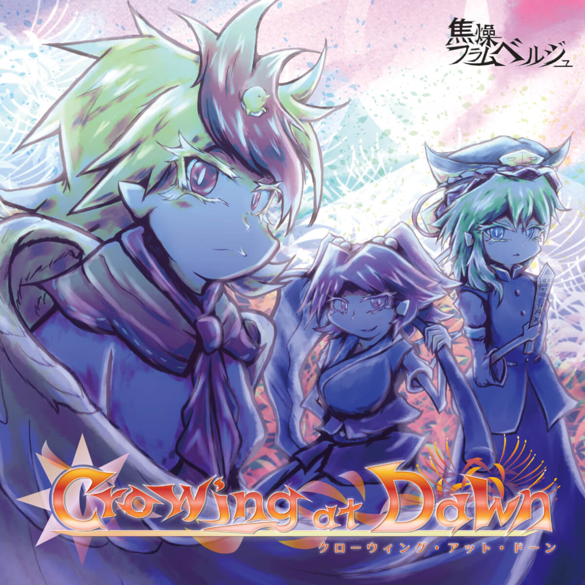

2024.05.03 第二十一回博麗神社例大祭
つ20a 焦燥フラムベルジュ
東方インストアレンジCD
『Crowing at Dawn』

| 原 曲 | ZUN, ziki_7 |
|---|---|
| アレンジ/イラスト /デザイン |
ラムバァト |
| ジャンル | シンフォニックロック / エスニックロック |
| 会場頒布価格 | 500円 |
XFD
試聴はこちら
Tracks
収録楽曲
-
seraphic gatekeeper ～ rewake
原 曲： セラフィックチキン -
Guilt or Innocence
原 曲： 六十年目の東方裁判 ～ Fate of Sixty Years -
Ancient Inferno ～ Revive
原 曲： 廃獄ララバイ -
retour to riverside ～ reflection
原 曲： 彼岸帰航 ～ Riverside View -
地獄を護りし剛翼の神威
原 曲： 水没した沈愁地獄 / 霊知の太陽信仰 ～ Nuclear Fusion / セラフィックチキン / 不朽の曼珠沙華 / 業火マントル -
Crowing at Dawn
原 曲： 不朽の曼珠沙華
DLC
特典QRコード付属
- 収録楽曲WAVファイル
- ジャケット画像
- PC用壁紙
- スマホ用壁紙